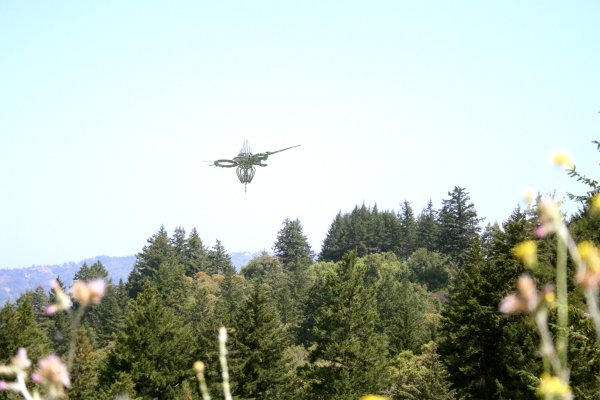

Hello !
(J'ai trouvé un certain nombre d'adresses email et n'étais pas sûre de laquelle vous vérifiiez le plus souvent,
donc je l'ai joué sûre et envoyé à toutes. J'espère que c'est ok).
Mon nom est Jenna et je participe à un listserv pour photographes à Saratoga, CA. Aujourd'hui un membre nommé
Stephen a posté des clichés qu'il a pris hier (le 5) for a class assignment dans la région autour de Big Basin.
Les images dépeignent très clairement une sorte de grand objet dans le ciel, et est parvenu à obtenir 2 clichés
nets et 1 cliché sans mise au point avant qu'il disparaisse apparemment. J'ai immédiatement reconnu certains
détails de cet objet parce qu'un ami m'avait envoyé votre article d'About.com sur different ovnis qui étaient
apparus récemment avec une apparence semblable.
Maintenant, je devrais mentionner qu'il s'agit d'un listserv privé pour un groupe très étroitement lié. J'ai
rencontré en personne pratiquement tous ceux qui y participent et j'ai rencontré Stephen en particulier de
nombreuses fois et prends donc sa parole au sérieux.
Nous en avons discuté des dernières heures et j'ai suggéré que nous commencions à envoyer des images à votre
site web puisque vous avez clairement une certaine familiarité avec cette situation jusqu'ici. Malheureusement
je ne suis pas modérateur de ce listserv et je ne peux vous y donner accès, mais je peux vous envoyer des copies
de la discussion à mesure qu'elle se développe au cas où vous voudriez être au courant. Dites-moi.
2ᵉ image à Big Basin

Stephen m'a donné la permission de vous contacter avec ses photos et informations et vous pouvez le contacter
par email si vous le souhaitez. Nous n'avons pas de besoin spécial d'anonymat sur ce sujet et si vous vouliez
poster cet email avec les photos vous pouvez le faire. Je serais intéressée d'entendre les avis des autres
photographes de ce type d'appareil en particulier et de voir de quoi tout ça retourne ! Ce qui suit est son 1er
email du listserv qui fut envoyé tôt cet après-midi :
'Stephen 06/06/2007 14:42:31 PST
salut les gars
ok, par où commencer — hier j'étais autour de big basin pour l'affectation dont je parlais ces dernières
semaines — le thême pour ceux qui ne s'en rappellent pas était de photographier quelque chose à une petite
échelle devant un fond à grande échelle pour contraster les échelles et jouer avec la profondeur de champ, etc
— j'ai choisi de photographier un couple de fleur/herbe poussant juste au bord d'un drop off avec la vallée en
fond — j'utilise toujours le rebel xt que j'ai acheté off mark qui est slr et donc je regarde tout à travers
un viseur lorsque je remarque que quelque chose apparait au loin, comme sorti de nulle part —
J'ai regardé en l'air et là se trouvait cet énorme dieu-sait-quoi flottant au loin et
tournant sur lui-même très lentement et de façon saccadée (est-ce un mot lol) — presque par réflexe je pris un
autre cliché avec la mise au point dessus cette fois et me levais, mais tombais practiquement parce que je
n'arrivais même plus à penser correctement —
3ème image à Big Basin

Je parvins à avoir un autre cliché qui sortit un peu flou et puis la chose a disparu — comme quand
vous voyez une chose et puis vous ne la voyez plus — J'ai attaché les images pour que vous puissiez les
examiner avant que je décide vraiment d'en faire quelque chose — doivent-elles passer au journal tv ou quoi —
tout retour serait vraiment bien avant que je prenne une décision définitive ici — également au passage j'ai
attaché 3 images, la 1ère quand il est apparu pour la 1ère fois juste au moment
où je prenais un cliché des fleurs, mais je voulais que vous voyiez tout ce que j'ai vu — désolé je n'ai que 3
clichés, mais cette chose est vraiment partie en quelques secondes.
Egalement en passant — je prévois de retourner dans la région ce weekend avec l'appareil photo et quiconque
veut me rejoindre — je vais vraiment passer toute la journée à me balader dans les alentours pour voir s'il se
montre à nouveau. S'il le fait je vais en prendre un million de clichés — vous devriez vraiment le voir ne
serait-ce que pour le croire, donc que quiconque veut venir me le fasse savoir — plus il y aura de
gens qui verront ça, mieux ce sera parce que je n'ai pas besoin de vous dire que jusqu'à maintenant, c'est une
situation assez folle et je veux que des témoins confirment ce que je dis.
stephen
Jenna L.
Photographe Freelance/Marriage
Il attrape alors sa caméra video, marche jusqu'au lac et filme l'ovni.
A la visualisation cependant, on ne peut distinguer qu'une vague lumière passant de l'orange à l'ambre, sautant
d'un côté à l'autre, en haut et en bas, disparaissant et réapparaissant au-dessus du lac :